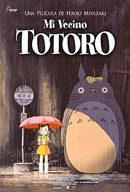

|

|
Mei é uma jovem que encontra uma pequena passagem em seu
quintal, que a leva a um lendário espírito da floresta,
conhecido como Totoro. Sua mãe está no hospital e seu pai
divide o tempo entre dar aulas na faculdade e cuidar de sua
mulher doente. Quando Mei tenta visitar a mãe por conta
própria, se perde na floresta, e só o grande e fofo Totoro
pode ajudá-la a achar o caminho de volta para casa.
|